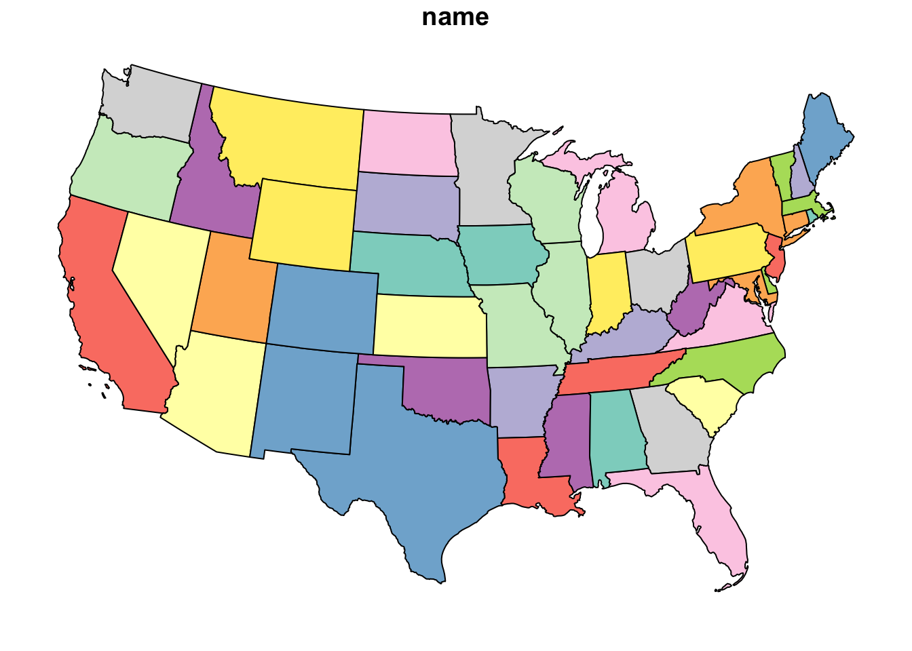
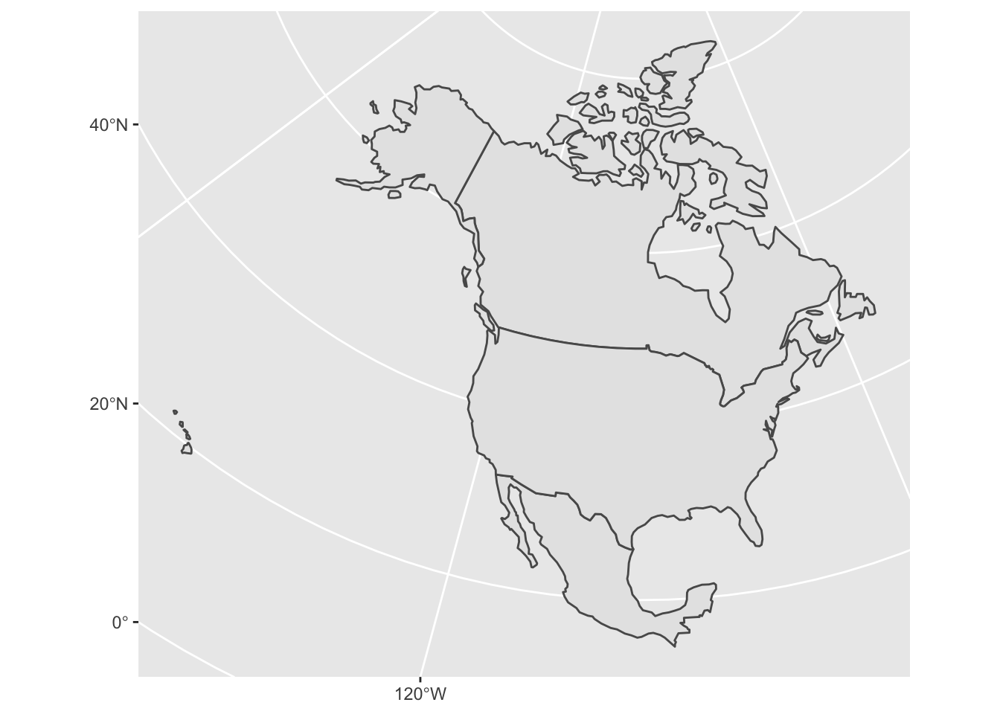
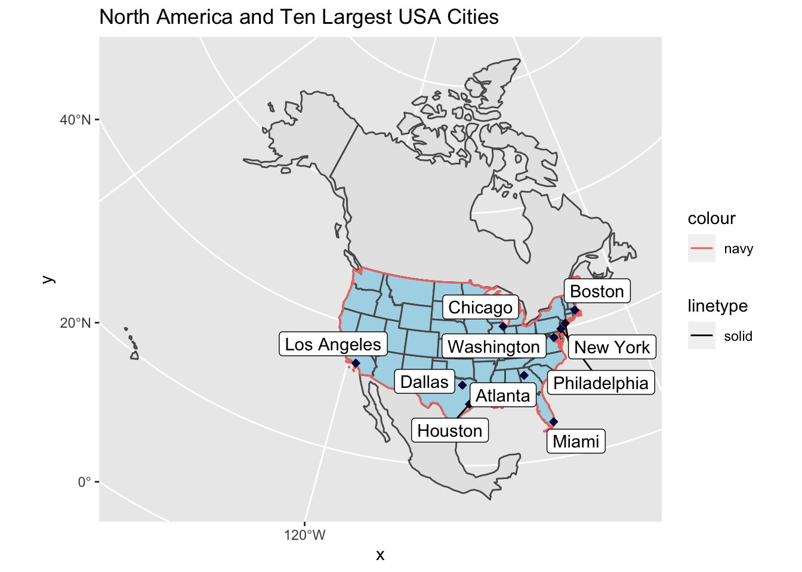
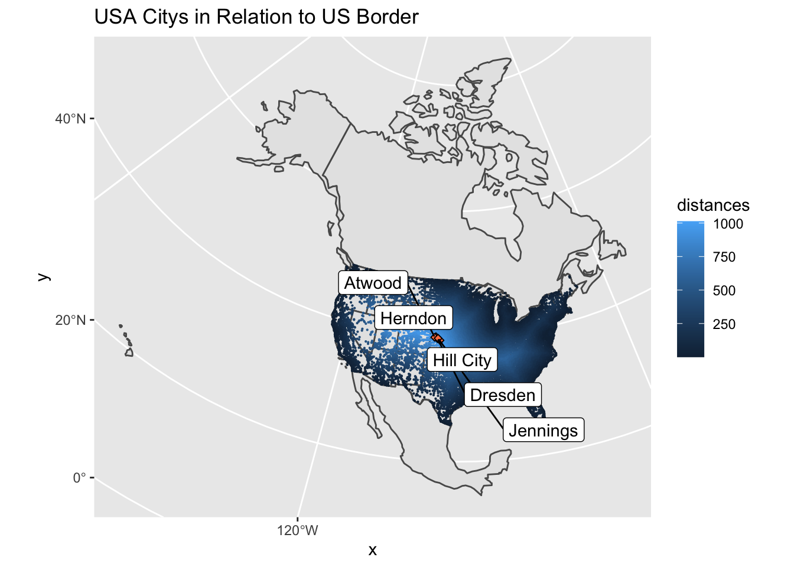
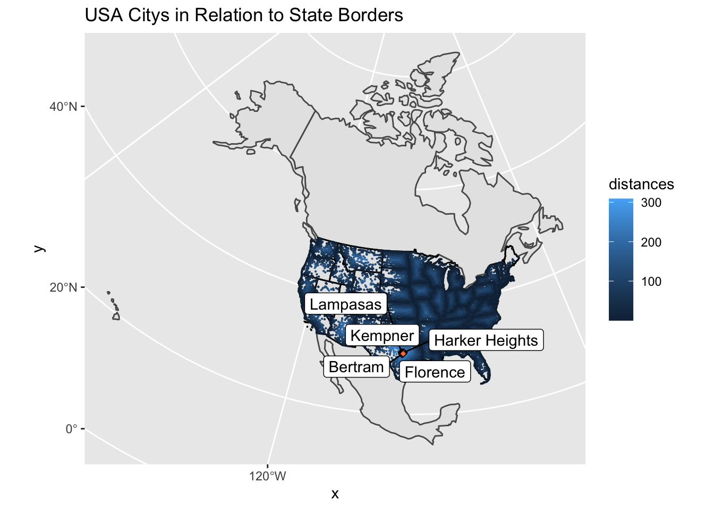
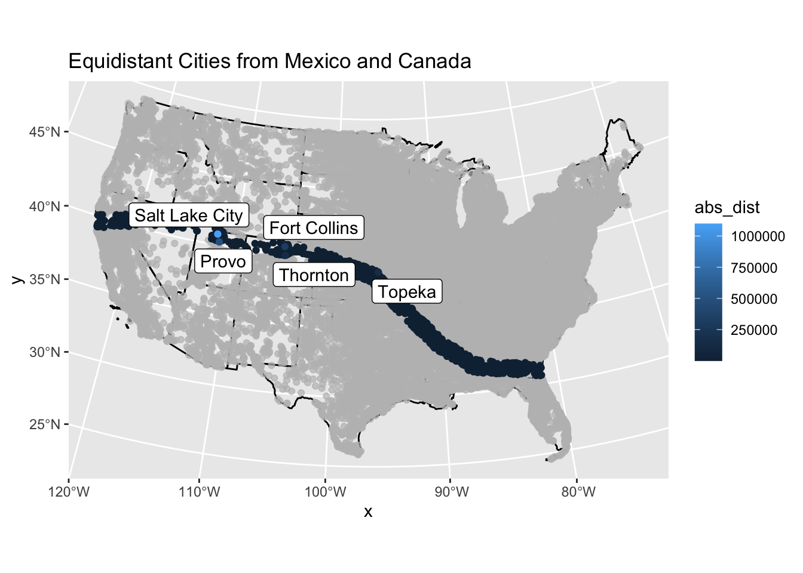
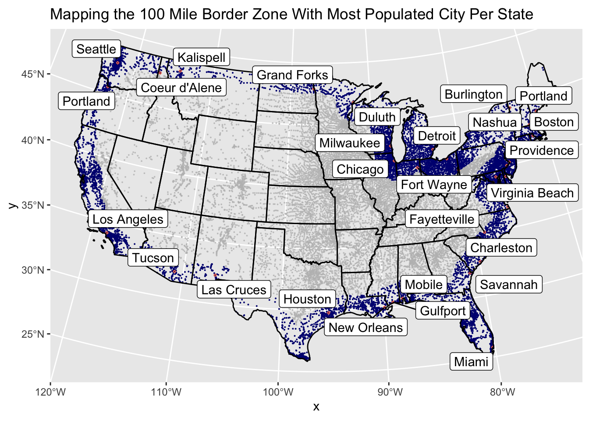

Load library packages
library(tidyverse)## ── Attaching packages ─────────────────────────────────────── tidyverse 1.3.1 ──## ✓ ggplot2 3.3.4 ✓ purrr 0.3.4
## ✓ tibble 3.1.2 ✓ dplyr 1.0.7
## ✓ tidyr 1.1.3 ✓ stringr 1.4.0
## ✓ readr 1.4.0 ✓ forcats 0.5.1## ── Conflicts ────────────────────────────────────────── tidyverse_conflicts() ──
## x dplyr::filter() masks stats::filter()
## x dplyr::lag() masks stats::lag()library(sf)## Linking to GEOS 3.8.1, GDAL 3.2.1, PROJ 7.2.1library(units)## udunits database from /Library/Frameworks/R.framework/Versions/4.1/Resources/library/units/share/udunits/udunits2.xmllibrary(USAboundaries)
library(rnaturalearth)
library(gghighlight)
library(ggrepel)
library(knitr)
library(readxl)
library(dplyr)##Data
get_conus = function(data, var){
filter(data, !get(var) %in% c("Hawaii", "Puerto Rico", "Alaska", "Guam"))
}
states_union = get_conus(us_states(), "name") %>%
st_union() %>%
st_cast("MULTILINESTRING")
states_combine = get_conus(us_states(), "name") %>%
st_combine() %>%
st_cast("MULTILINESTRING")
countries = st_as_sf(rnaturalearth::countries110)Question 1
### Question 1.1 Define a Projection
eqdc= '+proj=eqdc +lat_0=40 +lon_0=-96 +lat_1=20 +lat_2=60 +x_0=0 +y_0=0 +datum=NAD83 +units=m +no_defs'### Question 1.2 Get USA State Boundaries
boundaries <- USAboundaries::us_states(resolution = "low") %>%
get_conus("state_name") %>%
filter(name != "District of Columbia") %>%
select(name, geometry) %>%
st_transform(eqdc)
plot(boundaries)
### Question 1.3 Country Boundaries
countryBounds <- rnaturalearth::countries110 %>%
st_as_sf(countryBounds) %>%
filter(admin %in% c("Canada", "Mexico", "United States of America")) %>% st_transform(eqdc)
ggplot(countryBounds)+
geom_sf()
### Question 1.4 Get City Locations
url = '~/github/geog-13-labs/data/uscities.csv'
uscities <- read_csv(url)##
## ── Column specification ────────────────────────────────────────────────────────
## cols(
## city = col_character(),
## city_ascii = col_character(),
## state_id = col_character(),
## state_name = col_character(),
## county_fips = col_character(),
## county_name = col_character(),
## lat = col_double(),
## lng = col_double(),
## population = col_double(),
## density = col_double(),
## source = col_character(),
## military = col_logical(),
## incorporated = col_logical(),
## timezone = col_character(),
## ranking = col_double(),
## zips = col_character(),
## id = col_double()
## )bordercities <- uscities %>%
get_conus("state_name") %>%
st_as_sf(coords = c("lng", "lat"), crs = 4326) %>%
st_transform(crs = st_crs(eqdc))
plot(bordercities)## Warning: plotting the first 9 out of 15 attributes; use max.plot = 15 to plot
## all
Question 2
### Question 2.1 Distance to USA Border in km
resolvedBoundaries <- USAboundaries::us_states()%>%
get_conus("state_name") %>%
filter(name != "District of Columbia") %>%
st_as_sf() %>%
st_union() %>%
st_cast("MULTILINESTRING") %>%
st_transform(eqdc)
bordercities2.1 <- bordercities
dist_to_USborder <- st_distance(bordercities2.1, resolvedBoundaries) %>%
set_units("km")
distance <- bordercities2.1 %>%
mutate(dist_to_USborder = st_distance(bordercities2.1, resolvedBoundaries),
dist_to_USborder = set_units(dist_to_USborder, "km"),
dist_to_USborder = as.numeric(dist_to_USborder)) %>%
select(city, state_name, dist_to_USborder)
distance2.1 <- distance %>%
slice_max(dist_to_USborder, n = 5) %>%
st_drop_geometry()
knitr::kable(distance2.1, caption = "Five Cities Farthest From USA Border", col.names = c("City", "State", "Distance (km)")) | City | State | Distance (km) |
|---|---|---|
| Dresden | Kansas | 1012.398 |
| Herndon | Kansas | 1007.763 |
| Hill City | Kansas | 1005.143 |
| Atwood | Kansas | 1004.754 |
| Jennings | Kansas | 1003.646 |
### Question 2.2 Distance to States in km
preservedBoundaries <- USAboundaries::us_states()%>%
get_conus("state_name") %>%
filter(name != "District of Columbia") %>%
st_combine() %>%
st_cast("MULTILINESTRING") %>%
st_transform(eqdc)
bordercities2.2 <- bordercities
dist_to_stateborder <- st_distance(bordercities2.2,preservedBoundaries) %>%
set_units("km")
distance2.2 <- bordercities2.2 %>%
mutate(dist_to_stateborder = st_distance(bordercities2.2, preservedBoundaries),
dist_to_stateborder = set_units(dist_to_stateborder, "km"),
dist_to_stateborder = as.numeric(dist_to_stateborder)) %>%
select(city, state_name, dist_to_stateborder) %>%
slice_max(dist_to_USborder, n = 5) %>%
st_drop_geometry()
knitr::kable(distance2.2, caption = "Five Cities Farthest From Nearest State Boundary", col.names = c("City", "State", "Distance (km)")) | City | State | Distance (km) |
|---|---|---|
| Dresden | Kansas | 42.07713 |
| Herndon | Kansas | 10.34085 |
| Hill City | Kansas | 70.43168 |
| Atwood | Kansas | 21.32134 |
| Jennings | Kansas | 35.65318 |
### Question 2.3 Distance to Mexico in km
mexicoborder <- countryBounds %>%
filter(!admin %in% c("Canada", "United States of America")) %>%
st_union() %>%
st_cast("MULTILINESTRING")
bordercities2.3 <- bordercities
distance2.3 <- bordercities2.3 %>%
mutate(dist_to_mexborder = st_distance(bordercities2.3, mexicoborder),
dist_to_mexborder = set_units(dist_to_mexborder, "km"),
dist_to_mexborder = as.numeric(dist_to_mexborder)) %>%
select(city, state_name, dist_to_mexborder) %>%
slice_max(dist_to_mexborder, n = 5) %>%
st_drop_geometry()
knitr::kable(distance2.3, caption = "Five Cities Farthest From Mexican Border", col.names = c("City", "State", "Distance (km)")) | City | State | Distance (km) |
|---|---|---|
| Caribou | Maine | 3250.334 |
| Presque Isle | Maine | 3234.570 |
| Calais | Maine | 3134.348 |
| Passamaquoddy Pleasant Point | Maine | 3127.869 |
| Eastport | Maine | 3125.624 |
### Question 2.4 Distance to Canada in km
canadaborder <- countryBounds %>%
filter(!admin %in% c("Mexico", "United States of America")) %>%
st_union() %>%
st_cast("MULTILINESTRING")
bordercities2.4 <- bordercities
distance2.4 <- bordercities2.4 %>%
mutate(dist_to_canadaborder = st_distance(bordercities2.4, canadaborder),
dist_to_canadaborder = set_units(dist_to_canadaborder, "km"),
dist_to_canadaborder = as.numeric(dist_to_canadaborder)) %>%
select(city, state_name, dist_to_canadaborder) %>%
slice_max(dist_to_canadaborder, n = 5) %>%
st_drop_geometry()
knitr::kable(distance2.4, caption = "Five Cities Farthest From Canadian Border", col.names = c("City", "State", "Distance (km)")) | City | State | Distance (km) |
|---|---|---|
| Guadalupe Guerra | Texas | 2206.455 |
| Fronton | Texas | 2204.790 |
| Fronton Ranchettes | Texas | 2202.118 |
| Evergreen | Texas | 2202.020 |
| Ramos | Texas | 2201.882 |
Question 3
### Question 3.1 Data
outlineCONUS <- resolvedBoundaries
citiesbig10 <- uscities %>%
select(city, state_name, population, lat, lng) %>%
st_as_sf(coords = c("lng", "lat"), crs = 4326) %>%
st_transform(eqdc) %>%
slice_max(population, n = 10)
ggplot(countryBounds)+
geom_sf()+
geom_sf(data = boundaries, fill = "light blue")+
geom_sf(data = outlineCONUS, aes(linetype = "solid", color = "navy"))+
geom_sf(data = citiesbig10, fill = "navy", shape = 23)+
geom_label_repel(data = citiesbig10, aes(geometry = geometry, label = city), stat = "sf_coordinates")+
labs(title = "North America and Ten Largest USA Cities")
### Question 3.2 City Distance from USA Border
USAborder <- resolvedBoundaries
uscities3 <- uscities %>%
filter(!state_name %in% c("Alaska", "Hawaii", "Puerto Rico")) %>%
st_as_sf(coords = c("lng", "lat"), crs = 4326) %>%
st_transform(eqdc)
uscities3 <- uscities3 %>%
mutate(distances = st_distance(uscities3, USAborder),
distances = set_units(distances, "km"),
distances = as.numeric(distances)) %>%
select(city, state_name, population, distances)
fivefarcities_0 <- uscities3 %>%
slice_max(distances, n =5)
ggplot(countryBounds)+
geom_sf()+
geom_sf(data = boundaries)+
geom_sf(data = uscities3, aes(col = distances), size = .08)+
geom_sf(data = fivefarcities_0, fill = "coral", shape = 23)+
geom_label_repel(data = fivefarcities_0, aes(geometry = geometry, label = city), stat = "sf_coordinates")+
labs(title = "USA Citys in Relation to US Border")
### Question 3.3 City Distance from Respective State Boundary
stateboundaries <- preservedBoundaries
uscities3.2 <- uscities %>%
filter(!state_name %in% c("Alaska", "Hawaii", "Puerto Rico")) %>%
st_as_sf(coords = c("lng", "lat"), crs = 4326) %>%
st_transform(eqdc)
uscities3.2 <- uscities3.2 %>%
mutate(distances = st_distance(uscities3.2, stateboundaries),
distances = set_units(distances, "km"),
distances = as.numeric(distances)) %>%
select(city, state_name, population, distances)
fivefarcities <- uscities3.2 %>%
slice_max(distances, n =5)
ggplot(countryBounds)+
geom_sf()+
geom_sf(data = stateboundaries)+
geom_sf(data = uscities3.2, aes(col = distances), size = .08)+
geom_sf(data = fivefarcities, fill = "coral", shape = 23)+
geom_label_repel(data = fivefarcities,aes(geometry = geometry, label = city), stat = "sf_coordinates")+
labs(title = "USA Citys in Relation to State Borders")
### Question 3.4
uscities3.4 <- uscities %>%
filter(!state_name %in% c("Alaska", "Hawaii", "Puerto Rico")) %>%
st_as_sf(coords = c("lng", "lat"), crs = 4326) %>%
st_transform(eqdc)
uscities3.4 <- uscities3.4 %>%
mutate(distance_canada = st_distance(uscities3.4, canadaborder),
distance_canada = set_units(distance_canada, "km"),
distance_canada = as.numeric(distance_canada)) %>%
mutate(distance_mex = st_distance(uscities3.4, mexicoborder),
distance_mex = set_units(distance_mex, "km"),
distance_mex = as.numeric(distance_mex)) %>%
mutate(abs_dist = abs(distance_canada - distance_mex)) %>%
select(city, state_name, population, distance_canada, distance_mex, abs_dist)
cities3.4 <- uscities3.4 %>%
filter(abs_dist <= 100) %>%
slice_max(population, n =5)
ggplot(countryBounds)+
geom_sf()+
geom_sf(data = stateboundaries)+
geom_sf(data = uscities3.4, aes(col=abs_dist))+
gghighlight::gghighlight(abs_dist <= 100)+
geom_sf(data = cities3.4, aes(col=population))+
geom_label_repel(data = cities3.4,aes(geometry = geometry, label = city), stat = "sf_coordinates")+
labs(title = "Equidistant Cities from Mexico and Canada")## Warning: Could not calculate the predicate for layer 1, layer 2; ignored
Question 4
### Question 4.1 Border Zone Cities Data
resolvedBoundaries## Geometry set for 1 feature
## Geometry type: MULTILINESTRING
## Dimension: XY
## Bounding box: xmin: -2230934 ymin: -1612761 xmax: 2124154 ymax: 1271087
## CRS: +proj=eqdc +lat_0=40 +lon_0=-96 +lat_1=20 +lat_2=60 +x_0=0 +y_0=0 +datum=NAD83 +units=m +no_defs## MULTILINESTRING ((2014802 727969.6, 2019874 725...bordercities## Simple feature collection with 27620 features and 15 fields
## Geometry type: POINT
## Dimension: XY
## Bounding box: xmin: -2224960 ymin: -1601803 xmax: 2115970 ymax: 1275643
## CRS: +proj=eqdc +lat_0=40 +lon_0=-96 +lat_1=20 +lat_2=60 +x_0=0 +y_0=0 +datum=NAD83 +units=m +no_defs
## # A tibble: 27,620 x 16
## city city_ascii state_id state_name county_fips county_name population
## * <chr> <chr> <chr> <chr> <chr> <chr> <dbl>
## 1 New Yo… New York NY New York 36061 New York 18713220
## 2 Los An… Los Angeles CA California 06037 Los Angeles 12750807
## 3 Chicago Chicago IL Illinois 17031 Cook 8604203
## 4 Miami Miami FL Florida 12086 Miami-Dade 6445545
## 5 Dallas Dallas TX Texas 48113 Dallas 5743938
## 6 Philad… Philadelph… PA Pennsylvania 42101 Philadelphia 5649300
## 7 Houston Houston TX Texas 48201 Harris 5464251
## 8 Atlanta Atlanta GA Georgia 13121 Fulton 5449398
## 9 Washin… Washington DC District of… 11001 District of… 5379184
## 10 Boston Boston MA Massachuset… 25025 Suffolk 4688346
## # … with 27,610 more rows, and 9 more variables: density <dbl>, source <chr>,
## # military <lgl>, incorporated <lgl>, timezone <chr>, ranking <dbl>,
## # zips <chr>, id <dbl>, geometry <POINT [m]>zone100 <- bordercities %>%
mutate(distance = st_distance(bordercities, resolvedBoundaries),
distance = set_units(distance, "km"),
distance = as.numeric(distance)) %>%
filter(distance <= 160) %>%
select(city, state_name, population, distance, geometry) %>%
st_drop_geometry()
cities_in_zone <- nrow(zone100)
population_sum <- sum(zone100$population)
percent_population <- (population_sum / sum(uscities$population) * 100) %>%
round(digits =2)
df1 <- data.frame(Description = c("Number of Cities Within Zone","Total Population Within Zone", "Percent of Total Population within Zone %"), Stats = c(cities_in_zone, population_sum, percent_population))
knitr::kable(df1, caption = "100 Mile Border Zone Statistics")| Description | Stats |
|---|---|
| Number of Cities Within Zone | 11981.00 |
| Total Population Within Zone | 259952558.00 |
| Percent of Total Population within Zone % | 64.33 |
### Question 4.2 Mapping the Border Zone
zonecities <- bordercities %>%
mutate(distance = st_distance(bordercities, resolvedBoundaries),
distance = set_units(distance, "km"),
distance = as.numeric(distance)) %>%
select(city, state_name, population, distance, geometry)
most_pop <- zonecities %>%
filter(distance <= 160) %>%
group_by(state_name) %>%
slice_max(population)
ggplot(countryBounds)+
geom_sf()+
geom_sf(data = zonecities, aes(), col= "navy", size = .03)+
geom_sf(data = most_pop, aes(), col = "coral", size = .5, shape = 23)+
gghighlight::gghighlight(distance <= 160)+
geom_sf(data = stateboundaries)+
geom_label_repel(data = most_pop, aes(geometry = geometry, label = city), stat = "sf_coordinates")+
labs(title = "Mapping the 100 Mile Border Zone With Most Populated City Per State")